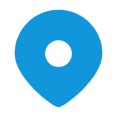

<!DOCTYPE html>
<html>

	<head>
		<meta charset="utf-8" />
		<meta http-equiv="X-UA-Compatible" content="IE=edge" />
		<meta name="viewport" content="initial-scale=1.0, user-scalable=no, width=device-width" />
		<title>导航</title>
		<style>
			html,
			body,
			#container {
				width: 100%;
				height: 100%;
			}

			#containerMap {
				position: absolute;
				top: 0;
				right: 10px;
				z-index: 1000;
				width: 150px;
				height: 150px;
				box-shadow: 3px 3px 5px rgba(0, 0, 0, 0.5);

			}

			/* 天气按钮 */
			#weatherButton {
				position: fixed;
				top: 540px;
				/* 距离页面顶部的距离 */
				right: 0px;
				/* 距离页面右侧的距离 */
				width: 50px;
				/* 设置宽度 */
				height: 50px;
				/* 设置高度 */
				z-index: 9999;
				/* 确保在其他内容之上 */

			}

			/* 天气信息框的大小 */
			#weather {
				position: absolute;
				top: 20px;
				/* 距离顶部的距离 */
				right: 170px;
				/* 距离右侧的距离 */
				background-color: rgba(255, 255, 255, 0.8);
				/* 设置背景颜色和透明度 */
				padding: 5px;
				/* 设置内边距 */
				border-radius: 5px;
				/* 设置圆角 */
				z-index: 1000;
				/* 设置层级，确保在地图上方显示 */
				line-height: 0.8;
				/* 设置行高，使文本更加紧凑 */
				font-size: 8px;
				/* 设置字号大小，根据需要调整 */
				box-shadow: 3px 3px 5px rgba(0, 0, 0, 0.5);
			}

			#nav_tip {
				position: fixed;
				bottom: 15px;
				left: 0;
				width: 95vw;
				/* max-width: 260px; */
				height: 140px;
				background: white;
				border-radius: 8px;
				padding: 10px;
				overflow-y: auto;
			}

			/* 样式表用于设置面板的样式 */
			.panel {
				position: fixed;
				bottom: -240px;
				/* 初始位置在页面底部之外 */
				left: 0;
				width: 100%;
				background-color: #f0f0f0;
				padding: 40px;
				opacity: 0.9;
				transition: bottom 0.4s ease;
				/* 添加过渡效果 */


			}

			/* 样式表用于设置按钮和图片的样式 */
			.buttonDiv {
				position: fixed;
				/* 按钮容器固定定位 */
				bottom: 0;
				/* 按钮容器位于页面底部 */
				width: 100%;
				/* 按钮容器宽度100% */
				text-align: center;
				/* 文本居中 */
				background-color: #f0f0f0;
				opacity: 0.9;
				left: 0;
				transition: bottom 0.5s ease;
			}

			.toggleButton {
				max-width: 100%;
				/* 按钮宽度100% */
			}

			.button img {
				max-width: 100%;
				/* 图片最大宽度100% */
				height: auto;
				/* 图片高度自适应 */
			}

			/* 输入框容器样式 */
			.search-container {
				position: relative;
				/* 相对定位 */
				width: 300px;
				/* 输入框容器宽度 */
				top: -30px;
				margin-bottom: 10px;
			}

			/* 输入框样式 */
			.search-input {
				/* 输入框宽度 */
				width: 75%;
				padding: 5px 35px 10px 10px;
				/* 上、右、下、左的内边距 */
				border: 1px solid #ccc;
				/* 边框样式 */
				border-radius: 20px;
				/* 边框圆角 */
			}

			/* 搜索图标样式 */
			.search-icon {
				position: absolute;
				/* 绝对定位 */
				top: 50%;
				/* 垂直居中 */
				right: 40px;
				/* 距左边框的距离 */
				transform: translateY(-50%);
				/* 垂直居中 */
				width: 20px;
				/* 图标宽度 */
				height: 20px;
				/* 图标高度 */

			}

			.sIcon {
				position: absolute;
				/* 绝对定位 */
				top: 50%;
				/* 垂直居中 */
				right: -10px;
				/* 距左边框的距离 */
				transform: translateY(-50%);
				/* 垂直居中 */
				width: 35px;
				/* 图标宽度 */
				height: 35px;
				/* 图标高度 */
			}

			.seIcon {
				position: absolute;
				/* 绝对定位 */
				top: 50%;
				/* 垂直居中 */
				right: -40px;
				/**距左边框的距离**/
				transform: translateY(-50%);
				/* 垂直居中 */

				width: 25px;
				/* 图标宽度 */
				height: 25px;
				/* 图标高度 */
			}

			.icon-container {
				position: absolute;
				bottom: -70px;
				/* 调整图标距离搜索框底部的距离 */
				left: 0;
				width: 100%;
				text-align: center;
				display: flex;
			}

			.icon-container img {
				width: 40px;
				/* 调整需要的图标宽度 */
				margin: 0 15px;
				/* 调整图标之间的间距 */
			}

			.icon-text {
				display: flex;
				flex-direction: row;
				justify-content: center;
				align-items: flex-end;
				/* 垂直对齐到底部 */
				margin-top: -1px;
				/* 调整文字距离图标的距离 */
				z-index: 99999;
			}

			.icon-text p {
				margin: 0 17px;
				font-size: 16px;
				/* 调整文字之间的间距 */
			}

			.amap-logo {
				display: none;
				opacity: 0 !important;
			}

			.amap-copyright {
				opacity: 0;
			}
		</style>

	</head>

	<body type="cursor:default !important">
		<div id="container"></div>
		<!-- <div id="containerMap"></div> -->
		<div id="weatherButton"></div>
		<div id="weather" style="display: none;"></div>

		<div id="nav_tip"></div>

		</div>
	</body>

</html>

<script type="text/javascript">
	window._AMapSecurityConfig = {
		securityJsCode: "5f64adeb894b07294e5cd3a22af74754",
	};
</script>
<script src="https://webapi.amap.com/loader.js"></script>

<script type="text/javascript">
	function getQueryVariable() {
		var query = decodeURIComponent(window.location.search.substring(1));
		var vars = query.split("=");
		return vars[1];
	}
	let meetingLocation = getQueryVariable().split('_')
	let city = meetingLocation[0]
	let keyword = meetingLocation[1]
	console.log('city=' + city);
	console.log('keyword=' + keyword);

	let localLocation = null;
	AMapLoader.load({
			key: "49af707cdad41b5f026999a3d76cd168", //申请好的Web端开发者key，调用 load 时必填
			version: "2.0", //指定要加载的 JS API 的版本，缺省时默认为 1.4.15
		})
		.then((AMap) => {

			//JS API 加载完成后获取AMap对象
			const map = new AMap.Map("container", {
				viewMode: '3D', //默认使用 2D 模式
				zoom: 18, //地图级别
				zooms: [10, 23],
				center: [119.902756, 28.458411], //地图中心点
				pitchEnable: true,
				showBuildingBlock: true,
				pitch: 30,
				showLabel: true
			});

			getLocation(AMap, map);

			//异步加载控件
			AMap.plugin('AMap.ToolBar', function() {
				var toolbar = new AMap.ToolBar({
					position: {
						top: '470px',
						right: '25px',
					}
				}); //缩放工具条实例化
				map.addControl(toolbar);
			});

			AMap.plugin('AMap.ControlBar', function() {

				var controlBar = new AMap.ControlBar(); //控制罗盘控件实例化
				map.addControl(controlBar);


			});

			//添加标记点
			//地图选点的标记
			nowMark = new AMap.Marker({
				position: [119.904926, 28.458732],
				content: '<div></img></div>', //引入图标
				offset: new AMap.Pixel(-10, -25)

			})
			map.add(nowMark)

			//天气情况
			//加载天气查询插件
			AMap.plugin("AMap.Weather", function() {
				//创建天气查询实例
				var weather = new AMap.Weather();
				//执行实时天气信息查询
				weather.getLive("丽水市", function(err, data) {
					// console.log(err, data);
					//err 正确时返回 null
					//data 返回实时天气数据，返回数据见下表
					if (err) {
						log.err("天气查询失败" + err);
					} else {
						// 获取天气情况
						var weatherInfo = data.weather;
						// 获取温度
						var temperature = data.temperature + " ℃";
						// 获取湿度
						var humidity = data.humidity + "%";
						// 获取风向
						var windDirection = data.windDirection;
						// 获取风力
						var windPower = data.windPower + "级";

						// 在页面上显示天气情况
						document.getElementById('weather').innerHTML = `
                            <h2>丽水市天气情况</h2>
                            <p>天气：${weatherInfo}</p>
                            <p>温度：${temperature}</p>
                            <p>湿度：${humidity}</p>
                            <p>风向：${windDirection}</p>
                            <p>风力：${windPower}</p>
                        `;
					}
				});
			});
			map.add(weather)
			// 获取天气按钮和要控制显隐的 div 元素
			var weatherButton = document.getElementById('weatherButton');
			var weathe = document.getElementById('weather');
			// 监听按钮的点击事件
			weatherButton.addEventListener('click', function() {
				// 切换 div 元素的显示状态
				if (weathe.style.display === 'none') {
					weathe.style.display = 'block';
				} else {
					weathe.style.display = 'none';
				}
			});
		});

	// JavaScript代码用于控制按钮点击事件以及面板的显示和隐藏

	// 获取按钮和面板的引用
	const buttonDiv = document.getElementById('buttonDiv');
	const panel = document.getElementById('panel');

	function getLocation(AMap, map) {
		var geolocation = null;
		AMap.plugin('AMap.Geolocation', function() {
			geolocation = new AMap.Geolocation({
				enableHighAccuracy: true, //是否使用高精度定位，默认:true
				timeout: 10000, //超过10秒后停止定位，默认：5s
				position: 'RT', //定位按钮的停靠位置
				offset: [30, 20], //定位按钮与设置的停靠位置的偏移量，默认：Pixel(10, 20)
				panToLocation: true,
				showCircle: false,
				needAddress: true
			});
			// if (lastLocation != null) {
			// 	lastLocation.hide();
			// }
			map.addControl(geolocation);
			// geolocation.hide();
			// lastLocation = geolocation;
			geolocation.getCurrentPosition(function(status, result) {
				if (status == 'complete') {
					console.log(result);
					console.log("精度", result.accuracy);
					console.log("经度", result.position.KL);
					console.log("纬度", result.position.kT);
					console.log("规范地址", result.formattedAddress);
					localLocation = getLocationData(result.formattedAddress);

					console.log(localLocation);
					let points = [{
							keyword: localLocation.keyword,
							city: localLocation.city
						},
						{
							keyword: keyword,
							city: city
						}
					]

					//引入和创建驾车规划插件
					AMap.plugin(["AMap.Driving"], function() {
						const driving = new AMap.Driving({
							map: map,
							panel: "nav_tip", //参数值为你页面定义容器的 id 值<div id="my-panel"></div>
						});
						//获取起终点规划线路
						driving.search(points, function(status, result) {
							if (status === "complete") {
								//status：complete 表示查询成功，no_data 为查询无结果，error 代表查询错误
								//查询成功时，result 即为对应的驾车导航信息
								console.log(result);
							} else {
								console.log("获取驾车数据失败：" + result);
							}
						});
					});
				}
			});
		});
	}

	function getLocationData(location) {
		if (!location.includes('市')) {
			uni.showToast({
				icon: "fail",
				title: "会议地址无效"
			})
			return locationData("error", "error")
		} else {
			let startIndex = 0
			if (location.includes('省')) {
				startIndex = location.indexOf('省') + 1
			}
			console.log('startIndex=' + startIndex);
			let endIndex = location.indexOf('市')
			console.log('endIndex=' + endIndex);
			let city = location.substring(startIndex, endIndex)
			let keyword = location.substring(endIndex + 1)
			return locationData(keyword, city)
		}
	}

	function locationData(keyword, city) {
		return {
			keyword: keyword,
			city: city
		}
	}
</script>